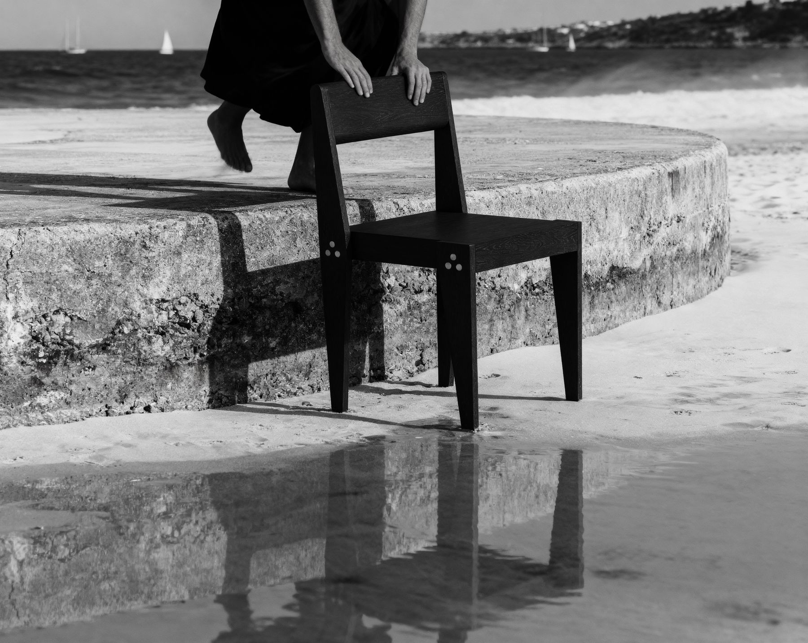
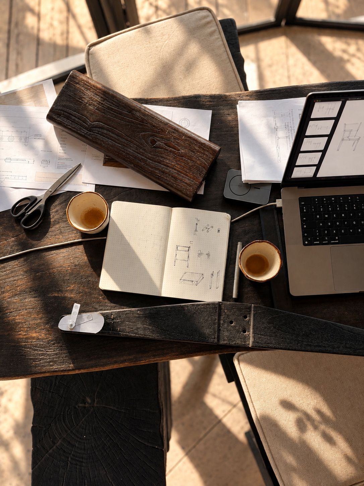
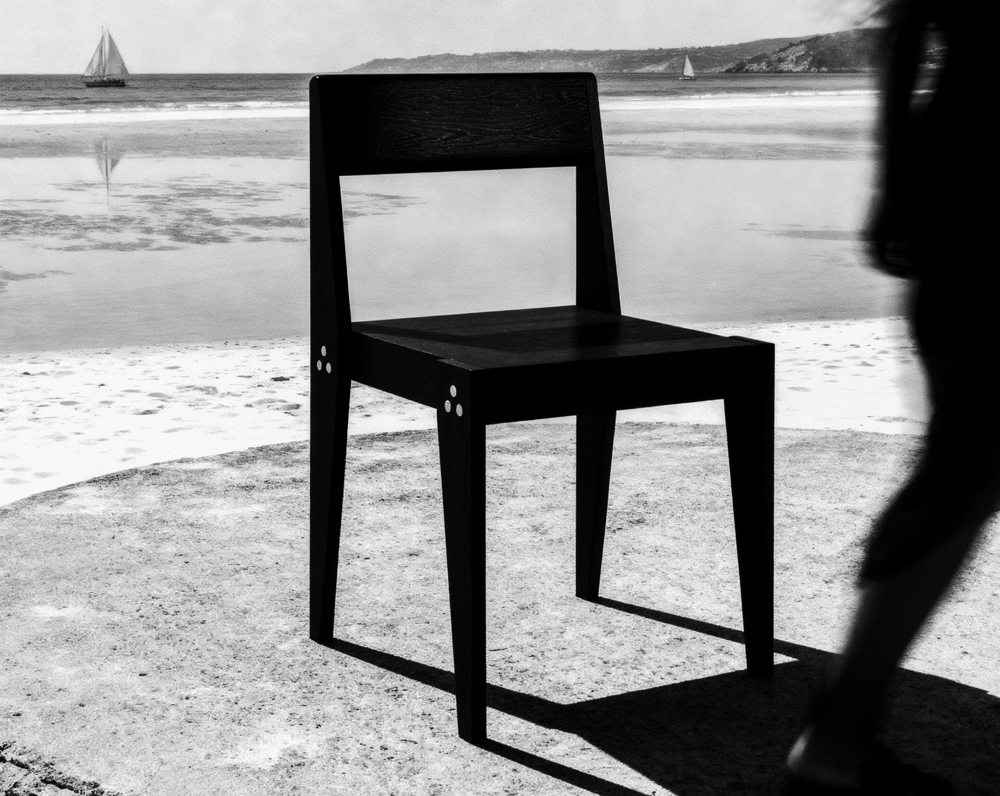
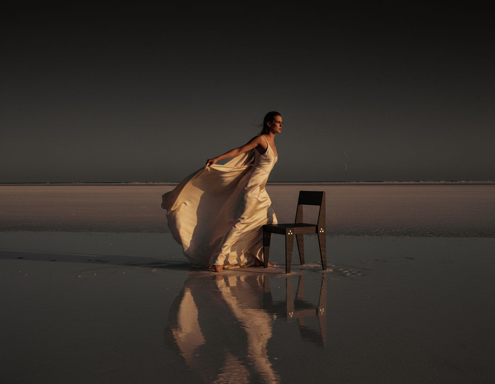

Use it again, before you make it again.
What we believe, how we design, and where we're heading. All on one page.
Last updated 2026-10-16

Long life beats recycling.
Think of an old glass milk bottle.
It goes back, gets washed and refilled, again and again. Melting it down to make a new one works too, but it costs far more energy and ends the bottle's life.
We think furniture should work like the refillable bottle. Keep it, fix it, move it, pass it on. A product with a short life is still short-lived, even if it gets recycled. A long-lived one doesn't need to be remade at all.
Recycling is great, just not as plan A. The most sustainable chair is the one that never needs replacing.
Every step down the list costs more energy and more material. We design to stay near the top for as long as possible.
- Use
Every day, in a real place. Not stacked in a corner.
- Repair
A part wears out? Replace the part, not the piece.
- Take apart and store
Undo the bolts, pack it flat, let it wait for its next job.
- Rebuild
Same piece, new place, new owner.
- Recycle
The very last stop. We hope our furniture never gets there.
Why we exist.
To make furniture that lasts a long time.
Hotels and restaurants spend years building a sense of place, and many of them look to Danish design for credibility. Then they furnish those places with pieces that won't last: plastic chairs and loungers that are bought, worn out and replaced on a short cycle.
That gap is the reason Another Life exists. We make furniture that earns the design it borrows from: well made, built from material that already exists, and designed to be repaired rather than thrown away.
The new luxury is not newness. It is something you can keep.
Another material.
Another owner.
Another place.
Another life.
The name is a belief. Old material deserves another life, and so does the furniture we make from it. A piece should be able to move to a new owner or a new place and keep going.
Always written ANOTHER — LIFE, with the dash.
An idea born in Bali.

We moved to Bali partly for Green School. Its ethos, to do better, stayed with us, and it is why this company exists.
We wanted to build something that does good and still lets us live a healthy family life, rather than chase scale for its own sake. The idea came from looking around: hotels across Bali and the islands east of it, full of plastic furniture with short lives.
Another Life was founded by Stine Palm and Magnus Palm. We have spent about a year in Indonesia learning its timber and working with local makers.
What we hold to.
Luxury is longevity
The most valuable piece of furniture is the one you never need to replace.
Use it again first
Reuse before recycling. Recycling is the last stop, not plan A.
Reclaim first
We use timber that already exists before we look for anything new.
Design for repair
Joints are bolted. Parts can be replaced. Pieces are made to be passed on.
Say what we know
We tell you what is and isn't sustainable about a piece. A label alone doesn't settle it.
Every decision matters
There is no perfectly sustainable piece of furniture. There are better decisions, and we try to make them.
A conversation in a chair
Furniture should give the person sitting in it something to ask about, not only give the owner something to point at.

Danish design, made where the material is.
Our design follows a Scandinavian tradition: simple, functional, made to last and to never go out of style. The pieces are made by hand in Indonesia, close to the timber and the people who work it.
Knock-down
Every piece ships disassembled and bolts together on site. Flat furniture takes far less space to move than assembled furniture.
Reassemblable
Joints must survive being taken apart and put back together many times, not once. A hotel can move, store or reconfigure its furniture.
Modular
Each component can be replaced on its own. One design can take different materials and parts over time, like a system rather than a single object.
Honest material
Grain, age, marks and imperfections stay visible. We want each piece to look like it has a story.
Built to be used, then rebuilt.
Our furniture has one job: to be used. Every day. And if the place it lives in changes? Undo a few bolts, it packs flat, takes a nap in storage and wakes up somewhere new. Landfill is not on the itinerary.
Made by hand from wood that has already lived once.
Shipped flat and bolted together on site.
Used every day: a dining room, a terrace, a pool.
A part wears out: replace the part, not the piece.
The place renovates or closes: take it apart, store it flat.
Someone gives it a new place and a new purpose. Back to step 3.
Plant. Give back. Collaborate.
We're just getting started, and we have big plans. We haven't planted a forest yet, and we won't pretend we have. But here's where we're heading.
Plant
For the wood we use, we want to plant new trees, including slow-growing native species like teak and ulin.
Give back
We want to share what we build with the communities behind our furniture: the makers we work with and the places the wood comes from.
Collaborate
We're looking for partners who share the idea: planting projects, NGOs, hotels, architects, makers and community initiatives.
Running a planting project, a community initiative or a hotel that wants to do better? Say hello. We love a good collaboration.
Sustainability isn't one feature. It's every decision.
No single material or label is sustainable everywhere. So we judge each material and method on six things, and we tell you what we find.
Origin
Where the material came from, and what it was before.
Production
Who made it, where, and how.
Longevity
How long it will last in daily hospitality use.
Transport
How it travels, and how much space it takes to move.
Repairability
Whether it can be fixed, and whether parts can be replaced.
Documentation
Whether the answers above are written down and can be checked.

How we speak.
Light, but serious
Short sentences, everyday words, one good fact at a time. Never preachy.
Quiet confidence
We let the material and the making carry the argument.
Facts as facts
We state what we know and say what we don't. Goals are written as goals.
We, not I
We speak as a company, in the first person plural.
Words we use, exactly as written.
Made for this life. And another.
Furniture worth keeping.
Luxury is longevity.
Make it once. Let it live.
DANISH DESIGN · BUILT TO LAST
Sustainability is for everyone. Conscious style is not.
Another material. Another owner. Another place. Another life.
Materials from another life. Designed for another life.
What we are. What we are not.
- We are
- Design furniture for hospitality, built to last and to be repaired
- We sit between
- Design furniture, contract hospitality furniture and sustainable furniture
- We are not
- The cheapest option
- We are not
- A brand that uses sustainability as an excuse for weaker design
- We never claim
- That a piece is completely sustainable
- Our standard
- Sustainability is for everyone. Conscious style is not.
Terms we use.
SATU
The first Another Life collection: The Chair, The Sun Lounger, The Bench, The Lounge Chair, The Side Table and The Coffee Table.
Repurposed teak
Teak that has already been cut and used. Much of ours comes from old joglo houses.
Joglo
A traditional Indonesian house built in teak. Much of the timber we reuse comes from old joglo houses.
Shou Sugi Ban
A Japanese technique of charring wood with flame, known in Japan as yakisugi and made for cedar. We apply it to hardwood teak and finish it with natural oil.
Ulin
Borneo ironwood (Eusideroxylon zwageri). An extremely dense, slow-growing and protected wood. We use it only reclaimed; it is in development as our second material.
Knock-down
Furniture that ships disassembled and bolts together on site. Ours is designed to be taken apart and reassembled more than once.
Conscious Sustainability
Our way of judging materials and methods. No single material or label is sustainable everywhere, so we look at origin, production, longevity, transport, repairability and documentation.
Another Life Passport
The digital record attached to each piece by QR code. It starts at the workshop and is meant to grow with the piece through installation, repairs, refinishing and return.
Proof of Reclaim
The part of the Passport that documents where a piece's timber came from and its earlier life.